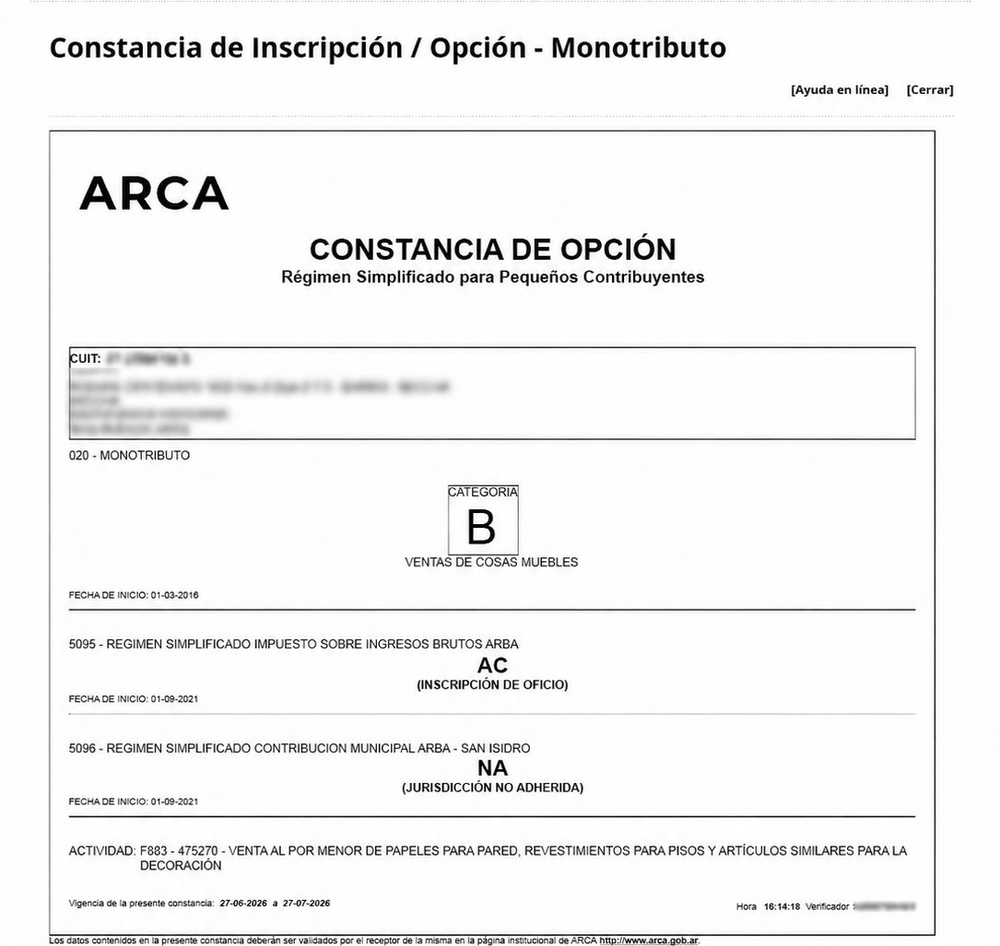

Completás el formulario
Nos contás quién sos, a qué te dedicás y tu situación actual.
Completá tus datos en pocos minutos. Nuestro contador matriculado gestiona tu inscripción ante ARCA y te acompaña hasta que puedas facturar.
Pago único. Incluye revisión, gestión del alta y acompañamiento. No es un arancel de ARCA.
Nos contás quién sos, a qué te dedicás y tu situación actual.
Definimos la categoría y los componentes adecuados para tu alta.
Gestionamos la inscripción y te enviamos todo listo para facturar.
Nos ocupamos de la inscripción y dejamos tu situación lista para empezar a facturar.
Revisamos tu actividad e ingresos para evitar que pagues de más o quedes mal categorizado.
Recibís la constancia de inscripción que emite ARCA y los datos necesarios para comenzar tu actividad.
Un asesor continúa con vos por WhatsApp antes, durante y después del trámite.
Monotributo Listo es un servicio privado. Un especialista revisa tu caso y gestiona el trámite por vos.
Quiero darme de alta ↗
En la mayoría de los casos queda resuelta dentro de las 24 horas hábiles posteriores a la validación de los datos y el pago.
La clave fiscal es necesaria para completar el alta, pero no te la pedimos en este formulario. Después, el contador matriculado te solicita una delegación mediante el sistema oficial de ARCA, limitada al trámite y revocable por vos cuando quieras. Si todavía no tenés clave fiscal, te explicamos cómo obtenerla desde ARCA Móvil.
Sí. Es una situación habitual y se contempla al definir correctamente los componentes de tu inscripción.
No. El contador matriculado te hace las preguntas necesarias, explica cada decisión en lenguaje simple y realiza el trámite por vos.
Monotributo Listo es una gestión privada e independiente. No representa, pertenece ni está afiliada a ARCA (ex AFIP) ni a ningún organismo estatal. Cobramos honorarios por el asesoramiento, la revisión de datos y la gestión del trámite. La inscripción básica al Monotributo puede realizarse sin costo directamente en el sitio oficial de ARCA.
Los plazos informados son estimativos y comienzan una vez validados los datos y el pago. La aprobación final y la disponibilidad de los sistemas dependen de ARCA. Nunca solicitamos tu clave fiscal desde este formulario.